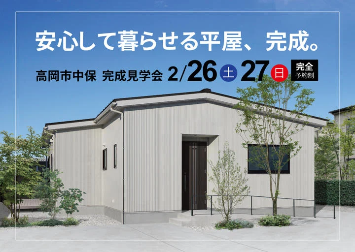

イベント情報
（終了しました）【高岡市中保】安心して暮らせる「平屋」完成見学会
詳しいご案内
日程・価格・募集内容などは、掲載当時の情報です。
2月26日（土）27日（日）の2日間
高岡市中保で「平屋の家」完成見学会を開催します。
会場は、完成したばかりの新築一戸建て住宅で、
"化学物質の匂い" がしない、健康を第一に考えた「自然素材の家」。
お施主様のご厚意により開催が実現しました。
こちらのお宅の最大の特徴は『明るいリビング』

照明を灯けなくても明るいその秘密は、大きな窓の反対側、家の中心部につくられた
「ウッドデッキの中庭」のおかげ。

常識では考えられない、家の中心部に "外の空間" を設けることで、「採光」の効果が抜群なのはモチロン、
サッシを開放すると家の中が「風の通り道」になって、換気にも絶大な効果を発揮します。
この中庭、見上げれば当然、そこに「空」が見えるので、


家の外を通る人や、近隣住人の目線を気にせずに洗濯物を干すことが出来るだけでなく、イスやテーブルを置いて自分達だけの「テラス席」として楽しむことも可能です。
柔らかい日差しを感じながら過ごす「午後のティータイム」に、
夜は「星空を眺めながらＢＢＱ」も！
"自分流の使い方" のアイディアが広がりますね。
＞＞お問合せ・ご予約「健康を第一」に考えるフジ創アイノスの家は、"全室自然素材" が標準仕様。
こちらのお宅では、リビングや、寝室の壁は湿度を自動的に調整する「漆喰」を採用。

"塗りの装飾" が見た目にも美しい仕上がりです。
更に、キッチンカウンターの目の前までもが "漆喰" 塗り仕上げで、

食事の内容も、健康への意識が高まりそうです。
＞＞お問合せ・ご予約バスルームの脱衣所は「パイン材」を使用。

暖かくて、吸湿性に優れた空間となっています。寒い冬でも入浴が楽しみになりますね。
まだまだあります、こだわりの空間。
玄関横の広い土間スペースは、ペットの「ワンちゃん」のためにつくられた場所。


外が大好きなワンちゃんとも思う存分、スキンシップを楽しめます。
この土間スペースは、収納エリアとしても大活躍。壁に設けられた大きな収納棚は、雪国富山の必需品「交換タイヤ」の保管場所を見越しての設え。必要十分な奥行きと高さを確保しています。
その反対側にも大容量の収納棚と、

隣には更にコート掛けがあり、雪や雨に濡れた衣類を室内に持ち込まない仕掛けが施されています。
＞＞お問合せ・ご予約最後にご紹介するのは、リビング窓際の壁に取り付けられたこの設備。

こちらは、収納型の「室内物干」で、物干竿を渡すとリビングの窓際が「ランドリースペース」に早変わり。

特に、冬場の今の時期は、"室内干し" に大活躍で、忙しい合間の家事効率アップに強い味方になります。
ここまでご紹介した内容に留まらず、「玄関前スロープ」や「間口の広い引き戸のトイレ」など、いつか来る将来の生活にもシッカリと対応しています。
この他にも、お施主様の工夫と、アイノスからのご提案が随所に施された『安心して暮らせる平屋』をぜひ現地でお確かめになってください。
＞＞お問合せ・ご予約「平屋の疑問」お答えします
「子どもと一緒に住むには不便では？」
「思い通りの間取りはつくれるの？」
「坪単価が高くなるって聞くけど本当に？」
などなど、
「平屋」をお考えのお客様の多くが気になる疑問にもお答えします。
--
フジ創アイノスが３５年の探求を重ねてつくりあげた、"家族の健康を第一に考えた『自然素材の家』"。
１歩足を踏み入れた瞬間に『空気の違い』を全身で体感していただけます。
長い間「安心して暮らせる家」を、是非この機会に "五感" で確かめてください。
開催概要
- 開催日時
- ２月２６日(土)・２７日(日)
AM10:00～PM5:00
- 開催場所
- 富山県高岡市中保
※詳細はご予約の方にお伝えします。

新型コロナウイルス感染症
拡大防止の対応について
フジ創アイノスでは、モデルハウス、イベント会場において、お客様に安心してご来場いただくために、マスクの着用・手洗い・アルコール消毒・高頻度接触部位の消毒・換気等の徹底を行い、可能な限りの対策を心掛けております。
また、ご来場に関しましては、不特定多数の方で混み合う状況を避けるため、見学会・相談会・セミナー等の開催イベントにつきましては、事前予約をおすすめします。ご来場を希望される方は、WEB予約、お電話でのご予約をお願い致します。